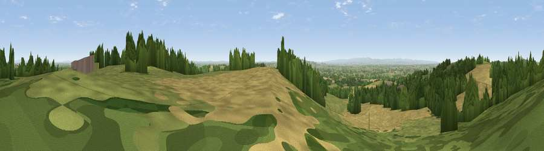

Viewpoint near Utkinton
#6920 in England · top 22% of its area beats it · near UtkintonThe view, rendered

A 360° render of this exact spot computed from the terrain model, tree cover and land cover — summer colours, afternoon light, calibrated against photographs of famous viewpoints. Real trees, hedges and buildings will differ in detail.
The panorama
Grey silhouette: terrain skyline in each direction (720 bearings, Earth curvature and refraction included). Dashed green: skyline with trees (+15 m) and buildings (+8 m) as obstacles. Blue strip: how far the ground is visible on each bearing.
Where the view opens
Wedge length = distance to the farthest visible ground on that bearing (vegetation-aware). Rings at 10, 25 and 50 km.
What fills the view
38% grassland · 34% cropland · 27% woodland · 2% built-up
Angular shares of the visible panorama (visual magnitude), not map area. Landscape diversity 0.51 (0–1 Shannon).
Key numbers
More beautiful places nearby
The staircase of upgrades: each row has a higher view potential than everything closer. Driving times are estimates from straight-line distance, calibrated against real road routing — check an actual route before setting out.
| Place | Direction | Drive | Score |
|---|---|---|---|
| Viewpoint near Utkinton | S · 0 km | ~1 min | 68.1 |
| Eddisbury Hill | N · 3 km | ~8 min | 71.1 |
| Hangingstone Hill - Pale Heights | NNW · 4 km | ~8 min | 73.3 |
| Beeston Crag | S · 7 km | ~15 min | 74.4 |
| Viewpoint near Burwardsley | SSW · 9 km | ~18 min | 74.6 |
| Beacon Hill | NNW · 11 km | ~21 min | 77.3 |
| Viewpoint near Harthill | SSW · 12 km | ~22 min | 80.5 |
| White Brow | NNE · 47 km | ~68 min | 82.9 |
53.19166, -2.67309 · source: screening · position refined by local search. Computed location — check access rights before visiting.